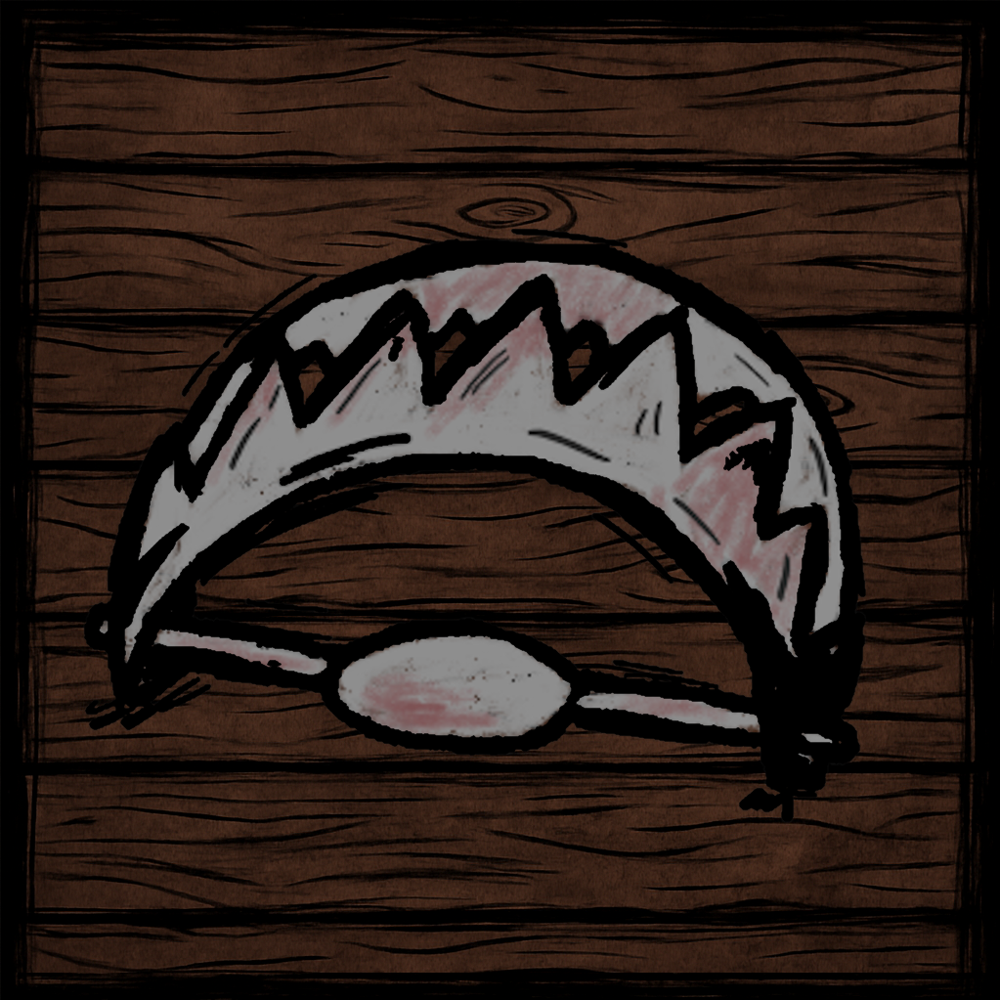
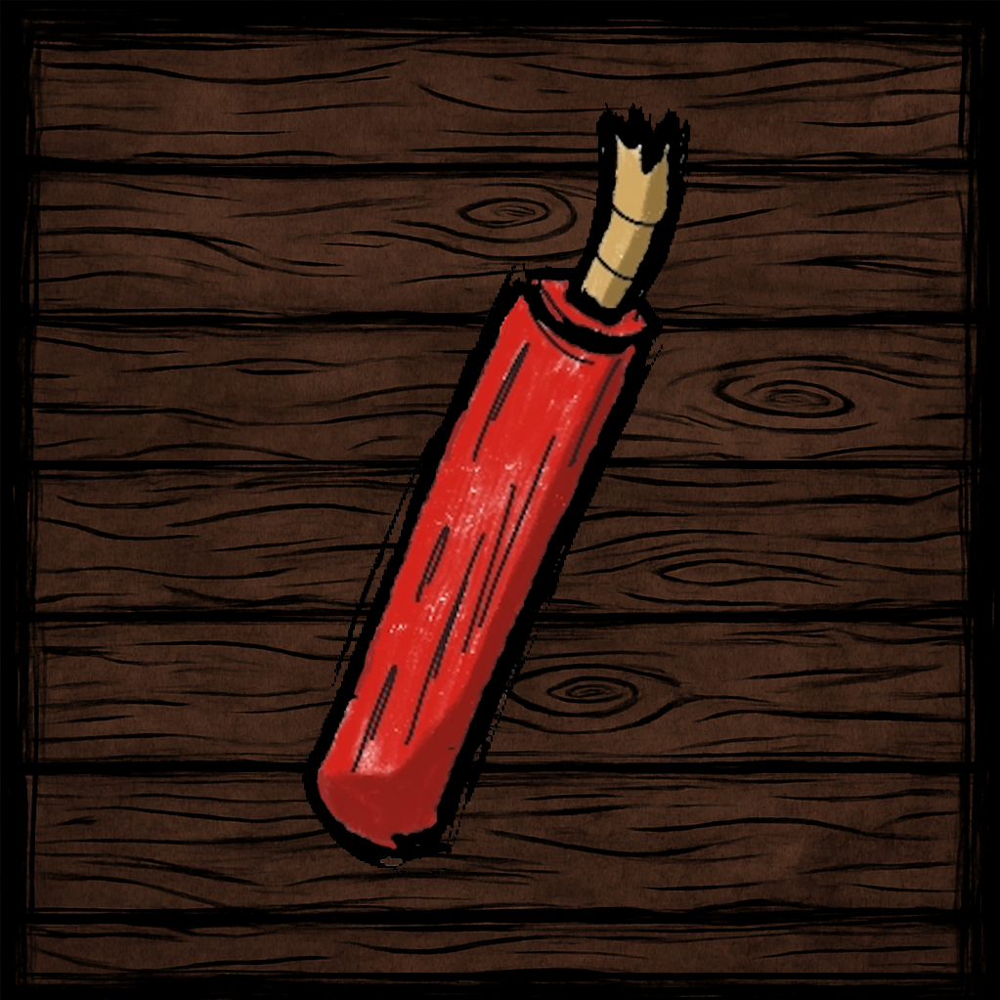
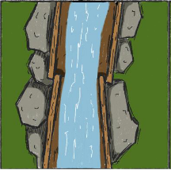

Tabletop game
Lumberjack Escape
A 1v1 board game where players race across the map by building paths and using action cards to disrupt each other.
Lumberjack Escape was designed in collaboration with Krištof Teplan and Ines del Transito Vaquero Ramirez. I worked on design, rules, and playtesting with an emphasis on readable strategy and player sabotage.

Game concept
Players try to reach the opposite side of the board while managing path-building choices and action cards. The design leans into direct interaction, blocking, traps, and timing.
My role
- Designed and refined rules through playtesting.
- Balanced path progression against disruptive card effects.
- Helped evaluate clarity, pacing, and replayability.
Assets
Board and cards


